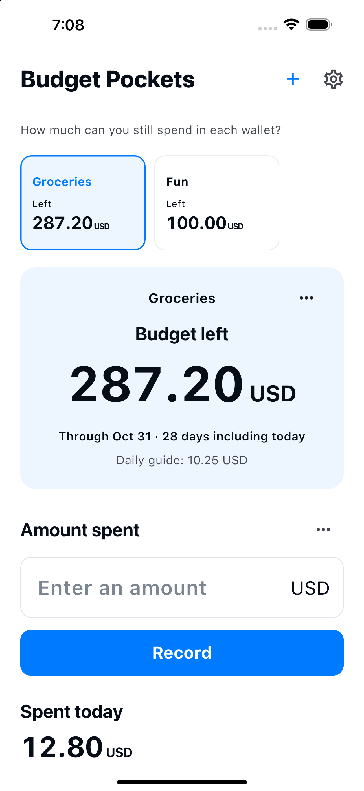

Create a wallet with your own name and budget.
How much can you still spend in each wallet?
Groceries. Fun.
Separate budgets. Clear balances.
Set budgets for groceries, fun and everyday essentials. Create your own wallets and see how much you can still spend in each one.
See how it works
Available for iPhone and Android

How it works
Separate. Record. See what’s left.
Choose a wallet and record what you spent.
Edit records or add refunds in History.
Start the next budget yourself. Past records stay.
Just the essentials
Your wallets.
Simple budgeting.
- Wallet name
- Choose any name and budget, such as Groceries, Fun, or Essentials. The initial period is this month.
- Budget left
- Remaining budget = budget − recorded expenses + refunds. It is a guide based on your entries, rather than your bank or cash balance. An overspent wallet isn't covered by another wallet's balance.
- 10 languages · 10 currencies
- 日本語 / English / 한국어 / 简体中文 / 繁體中文 / Español / Français / Deutsch / Italiano / Português (Brasil)
JPY / USD / EUR / KRW / CNY / TWD / BRL / GBP / CAD / AUD
Records on your device
No account needed.
Wallet names, budgets, currencies and periods, and expense/refund amounts, dates and notes are stored in this app’s database on your device. They are used to show each wallet’s budget and history.
No account is required. The app does not send your records to a developer-operated server and has no advertising, analytics or tracking. Your operating system may include data in backups or device transfers; restoration is not guaranteed. You can delete expense and refund entries in History. Archiving a wallet keeps its records. Uninstalling the app may remove its local records. Manage operating-system backups in your device or account settings.
Privacy Policy →